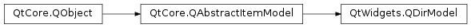

QDirModel¶
Synopsis¶
Functions¶
- def
fileIcon(index) - def
fileInfo(index) - def
fileName(index) - def
filePath(index) - def
filter() - def
iconProvider() - def
index(path[, column=0]) - def
isDir(index) - def
isReadOnly() - def
lazyChildCount() - def
mkdir(parent, name) - def
nameFilters() - def
remove(index) - def
resolveSymlinks() - def
rmdir(index) - def
setFilter(filters) - def
setIconProvider(provider) - def
setLazyChildCount(enable) - def
setNameFilters(filters) - def
setReadOnly(enable) - def
setResolveSymlinks(enable) - def
setSorting(sort) - def
sorting()
Detailed Description¶
The
PySide2.QtWidgets.QDirModelclass provides a data model for the local filesystem.The usage of
PySide2.QtWidgets.QDirModelis not recommended anymore. ThePySide2.QtWidgets.QFileSystemModelclass is a more performant alternative.This class provides access to the local filesystem, providing functions for renaming and removing files and directories, and for creating new directories. In the simplest case, it can be used with a suitable display widget as part of a browser or filer.
PySide2.QtWidgets.QDirModelkeeps a cache with file information. The cache needs to be updated withPySide2.QtWidgets.QDirModel.refresh().
PySide2.QtWidgets.QDirModelcan be accessed using the standard interface provided byPySide2.QtCore.QAbstractItemModel, but it also provides some convenience functions that are specific to a directory model. ThePySide2.QtWidgets.QDirModel.fileInfo()andPySide2.QtWidgets.QDirModel.isDir()functions provide information about the underlying files and directories related to items in the model.Directories can be created and removed using
PySide2.QtWidgets.QDirModel.mkdir(),PySide2.QtWidgets.QDirModel.rmdir(), and the model will be automatically updated to take the changes into account.Note
PySide2.QtWidgets.QDirModelrequires an instance ofPySide2.QtWidgets.QApplication.
-
class
PySide2.QtWidgets.QDirModel([parent=nullptr])¶ -
class
PySide2.QtWidgets.QDirModel(nameFilters, filters, sort[, parent=nullptr]) Parameters: - filters –
PySide2.QtCore.QDir.Filters - sort –
PySide2.QtCore.QDir.SortFlags - nameFilters – list of strings
- parent –
PySide2.QtCore.QObject
Constructs a directory model with the given
parent.Constructs a new directory model with the given
parent. Only those files matching thenameFiltersand thefiltersare included in the model. The sort order is given by thesortflags.- filters –
-
PySide2.QtWidgets.QDirModel.Roles¶ Constant Description QDirModel.FileIconRole QDirModel.FilePathRole QDirModel.FileNameRole
-
PySide2.QtWidgets.QDirModel.fileIcon(index)¶ Parameters: index – PySide2.QtCore.QModelIndexReturn type: PySide2.QtGui.QIconReturns the icons for the item stored in the model under the given
index.
-
PySide2.QtWidgets.QDirModel.fileInfo(index)¶ Parameters: index – PySide2.QtCore.QModelIndexReturn type: PySide2.QtCore.QFileInfoReturns the file information for the specified model
index.Note
If the model index represents a symbolic link in the underlying filing system, the file information returned will contain information about the symbolic link itself, regardless of whether
PySide2.QtWidgets.QDirModel.resolveSymlinks()is enabled or not.See also
QFileInfo.symLinkTarget()
-
PySide2.QtWidgets.QDirModel.fileName(index)¶ Parameters: index – PySide2.QtCore.QModelIndexReturn type: unicode Returns the name of the item stored in the model under the
indexgiven.
-
PySide2.QtWidgets.QDirModel.filePath(index)¶ Parameters: index – PySide2.QtCore.QModelIndexReturn type: unicode Returns the path of the item stored in the model under the
indexgiven.
-
PySide2.QtWidgets.QDirModel.filter()¶ Return type: PySide2.QtCore.QDir.FiltersReturns the filter specification for the directory model.
See also
PySide2.QtWidgets.QDirModel.setFilter()QDir.Filters
-
PySide2.QtWidgets.QDirModel.iconProvider()¶ Return type: PySide2.QtWidgets.QFileIconProviderReturns the file icon provider for this directory model.
-
PySide2.QtWidgets.QDirModel.index(path[, column=0])¶ Parameters: - path – unicode
- column –
PySide2.QtCore.int
Return type: This is an overloaded function.
Returns the model item index for the given
path.
-
PySide2.QtWidgets.QDirModel.isDir(index)¶ Parameters: index – PySide2.QtCore.QModelIndexReturn type: PySide2.QtCore.boolReturns
trueif the model itemindexrepresents a directory; otherwise returnsfalse.
-
PySide2.QtWidgets.QDirModel.isReadOnly()¶ Return type: PySide2.QtCore.bool
-
PySide2.QtWidgets.QDirModel.lazyChildCount()¶ Return type: PySide2.QtCore.bool
-
PySide2.QtWidgets.QDirModel.mkdir(parent, name)¶ Parameters: - parent –
PySide2.QtCore.QModelIndex - name – unicode
Return type: Create a directory with the
namein theparentmodel item.- parent –
-
PySide2.QtWidgets.QDirModel.nameFilters()¶ Return type: list of strings Returns a list of filters applied to the names in the model.
-
PySide2.QtWidgets.QDirModel.refresh([parent=QModelIndex()])¶ Parameters: parent – PySide2.QtCore.QModelIndexPySide2.QtWidgets.QDirModelcaches file information. This function updates the cache. Theparentparameter is the directory from which the model is updated; the default value will update the model from root directory of the file system (the entire model).
-
PySide2.QtWidgets.QDirModel.remove(index)¶ Parameters: index – PySide2.QtCore.QModelIndexReturn type: PySide2.QtCore.boolRemoves the model item
indexfrom the directory model and deletes the corresponding file from the file system , returning true if successful. If the item cannot be removed, false is returned.Warning
This function deletes files from the file system; it does not move them to a location where they can be recovered.
See also
-
PySide2.QtWidgets.QDirModel.resolveSymlinks()¶ Return type: PySide2.QtCore.bool
-
PySide2.QtWidgets.QDirModel.rmdir(index)¶ Parameters: index – PySide2.QtCore.QModelIndexReturn type: PySide2.QtCore.boolRemoves the directory corresponding to the model item
indexin the directory model and deletes the corresponding directory from the file system , returning true if successful. If the directory cannot be removed, false is returned.Warning
This function deletes directories from the file system; it does not move them to a location where they can be recovered.
See also
-
PySide2.QtWidgets.QDirModel.setFilter(filters)¶ Parameters: filters – PySide2.QtCore.QDir.FiltersSets the directory model’s filter to that specified by
filters.Note that the filter you set should always include the
QDir.AllDirsenum value, otherwisePySide2.QtWidgets.QDirModelwon’t be able to read the directory structure.See also
PySide2.QtWidgets.QDirModel.filter()QDir.Filters
-
PySide2.QtWidgets.QDirModel.setIconProvider(provider)¶ Parameters: provider – PySide2.QtWidgets.QFileIconProviderSets the
providerof file icons for the directory model.
-
PySide2.QtWidgets.QDirModel.setLazyChildCount(enable)¶ Parameters: enable – PySide2.QtCore.bool
-
PySide2.QtWidgets.QDirModel.setNameFilters(filters)¶ Parameters: filters – list of strings Sets the name
filtersfor the directory model.
-
PySide2.QtWidgets.QDirModel.setReadOnly(enable)¶ Parameters: enable – PySide2.QtCore.bool
-
PySide2.QtWidgets.QDirModel.setResolveSymlinks(enable)¶ Parameters: enable – PySide2.QtCore.bool
-
PySide2.QtWidgets.QDirModel.setSorting(sort)¶ Parameters: sort – PySide2.QtCore.QDir.SortFlagsSets the directory model’s sorting order to that specified by
sort.See also
PySide2.QtWidgets.QDirModel.sorting()QDir.SortFlags
-
PySide2.QtWidgets.QDirModel.sorting()¶ Return type: PySide2.QtCore.QDir.SortFlagsReturns the sorting method used for the directory model.
See also
PySide2.QtWidgets.QDirModel.setSorting()QDir.SortFlags
© 2018 The Qt Company Ltd. Documentation contributions included herein are the copyrights of their respective owners. The documentation provided herein is licensed under the terms of the GNU Free Documentation License version 1.3 as published by the Free Software Foundation. Qt and respective logos are trademarks of The Qt Company Ltd. in Finland and/or other countries worldwide. All other trademarks are property of their respective owners.